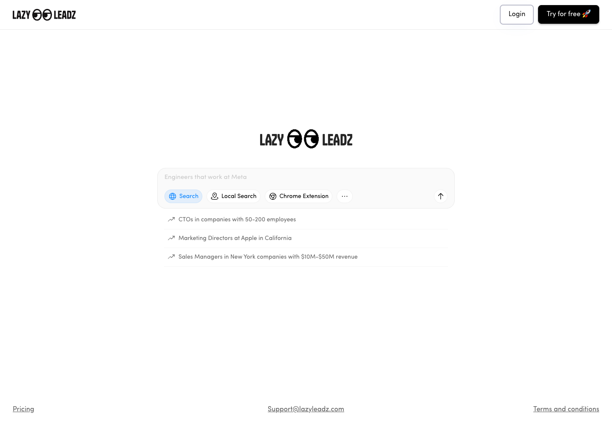

I hired the engineer, sourced the data, expanded the design, and owned delivery of a searchable, exportable lead database.
By Ken Johnson

LazyLeadz's public search interface, captured September 20, 2026. This shows the current entry screen, not the original launch design.
Bet
The starting point was a single Figma file for a search interface. The product needed much more than that screen: an engineer, licensed data, the rest of the user experience, API providers, and a delivery plan.
We wanted to make a large lead database searchable and exportable with usage-based pricing. The 140 million figure describes the intended database coverage, not paying customers or the number of leads users exported.
What I Did
I wrote the engineering role, sourced and interviewed candidates, and hired a senior Bubble engineer. I assessed design judgment, relevant product experience, timezone fit, and budget alongside the ability to implement the product.
I researched data brokers and worked through data quality, licensing, and compliance questions with the vendor. I expanded the original Figma design into the remaining product surfaces, selected API providers, owned the roadmap, and ran delivery standups.
Outcome
My work records describe a launch in two to three months and approximately $250K in revenue over 12 months. Those are historical project figures, not a claim that the product earned $250K in its first three months.
A separate Bubble data snapshot taken on June 25, 2026 contains 16,407 search records and 1,586 export records totaling 2,431,644 exported rows. These are recorded activity counts, not unique leads or paying-customer counts.
Product and Evidence
Visit LazyLeadz for the product. The delivery and revenue account comes from my work notes. Activity counts were checked against the June 25, 2026 data snapshot; that snapshot does not verify revenue.